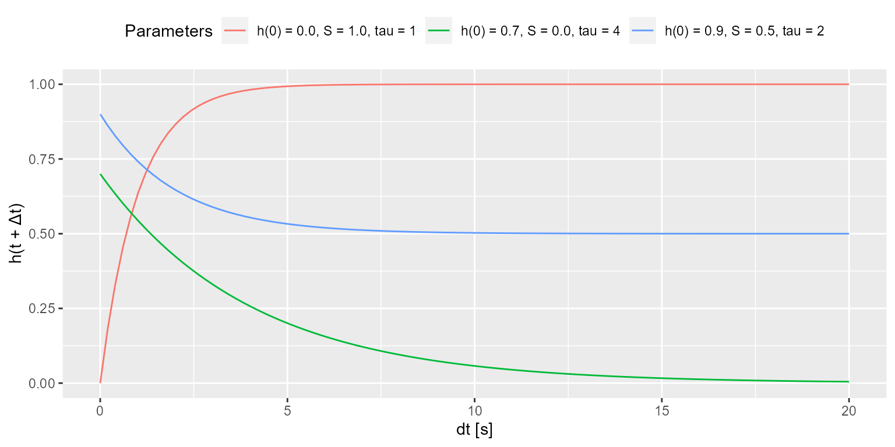

Cumulative History
Alexander (Sasha) Pastukhov
2022-03-22
Source:vignettes/cumulative-history.Rmd
cumulative-history.RmdCertain stimuli, such as a Necker cube depicted below, are compatible with several, typically two, comparably likely perceptual interpretations. In case of the Necker cube, one can perceive as “upwards” or “downwards” and during continuous viewing the perception alternates between these alternatives (these alternations are schematically depicted on the right).
A distribution of these so-called dominance phases typically has a right-skewed distribution that is frequently fitted using Gamma distribution.
However, the individual dominance phases show a subtle but consistent serial dependence, see, for example, (van Ee 2009). This serial dependence is thought to reflect accumulation of slow adaptation (Pastukhov et al. 2013) or prediction error (Weilnhammer et al. 2017) for the dominant percept. This slow accumulation process can be described via a homogeneous first order process. A brief summary on the formula and examples of accumulation over time for different initial values, signal strength, and time constants are presented below. For further details, please refer to (Pastukhov and Braun 2011).
The cumulative history for a perceptual state is computed via a homogeneous first order process (for details on first order linear differential equations please refer to chapter 2 in Wilson (1999)): \[\tag{1}\frac{dh_i}{dt} = \frac{1}{\tau} (-h_i + S_i(t))\]
where \(\tau\) is the time constant, \(h_i\) is cumulative history and \(S_i(t)\) is current signal level for for the ith perceptual state, so that \[\tag{2} S(t) = \begin{cases} 1 & \text{if state $i$ is dominant}\\ 0 & \text{if state $i$ is suppressed}\\ S_{mixed} & \text{if it is a mixed/transition phase and $0 ≥ S_{mixed} ≥1 $} \end{cases}\]
where \(S_{mixed}\) corresponds to
the mixed_state parameter that can be either specified (the
fit_cumhist() function uses a default of 0.5)
or fitted. The general solution for the equation (see Theorem 1 in Wilson (1999), chapter 2, page 15) is
\[\tag{3}h_i(t) = A e^{-t/\tau} + \frac{1}{\tau} \int_{0}^{t} e^{-(t'-t)/\tau} S(t') dt'\]
where \(A\) is chosen to satisfy the initial condition. Assuming a constant signal \(S\), we obtain \[\tag{4}h_i(t) = A e^{-t/\tau} + S_i \cdot (1 - e^{-t/\tau})\]
For the cumulative history, we are interested in \(h_i(t + \Delta t)\): a change following a dominance phase that starts at time \(t\), ends at time \(t + \Delta t\), and has a constant signal strength \(S_i\). Assuming that a dominance phase starts at \(t=0\) and substituting into the equation 4, \(h_i(0) = A\). In other words, constant \(A\) is equal to cumulative history state before the dominance phase onset and, therefore, the relative signal strength during the dominance phase is determined by the difference between the signal strength and the initial cumulative history value: \(S_i - h_i(0)\). Thus \[\tag{5} h_i(\Delta t) = h_i(0) + (S - h_i(0)) \cdot (1 - e^{-\Delta t/\tau})\] \[\tag{6} h_i(\Delta t) = S + (h_i(0) - S) \cdot e^{-\Delta t/\tau}\]
The figure below shows accumulation over time for three different
initial values (\(x(0)\)), signal
strength (\(S\)), and and time
constants (\(tau\)). Note that the
package allows to either specify and fit both the time constant
(argument tau in fit_cumhist() function) and
the initial history value at the block (history_init
argument).

As for a bistable case there are two history states (one for each perceptual state), we compute a history as a difference of cumulative histories \[\tag{7}\Delta h(t, \tau) = h_{suppressed}(t, \tau) - h_{dominant}(t, \tau) \] where \(h_{dominant}\) and \(h_{suppressed}\) are history states for the currently dominant and suppressed states, respectively. E.g., if a left eye dominates during following phase, \(h_{dominant} = h_{left}\) and \(h_{suppressed} = h_{right}\) and vice versa.